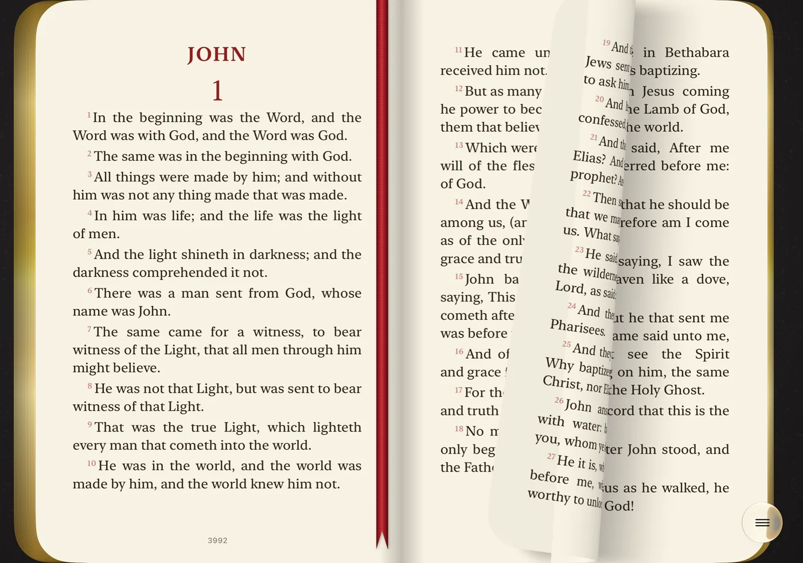
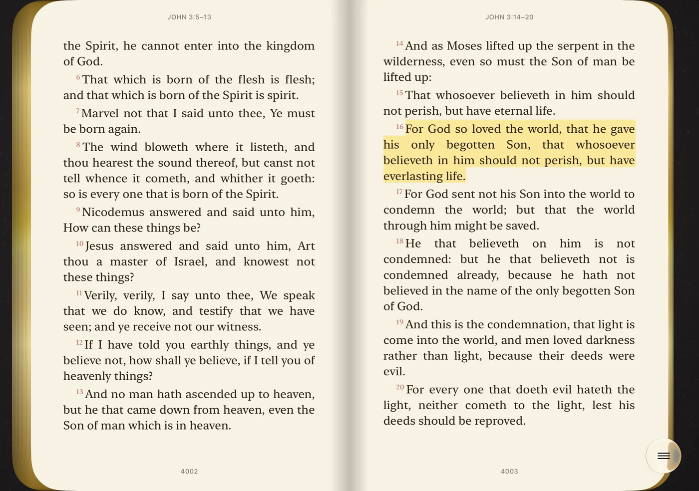
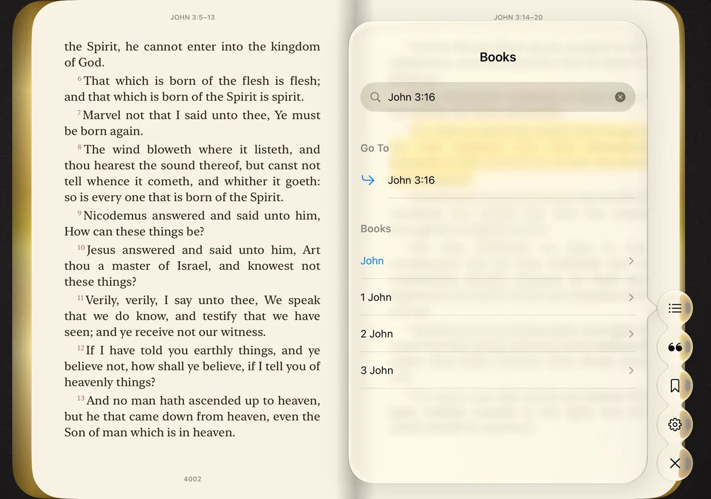

Closed, the cover. Open, the book.
With iPhone Duo closed, the outer display shows your Bible's leather cover. Swipe it open and read one page at a time. Unfold your Duo and the Bible lies open on two pages, like the one on your nightstand.
Turn pages by hand
Pages curl under your finger, with the light and shadow of paper. The gilded edges show how far you've read, and a cloth ribbon keeps your place.

Highlight what speaks to you
Touch and hold a word to highlight the verse in one of four colors. Every highlight becomes a quote to revisit and share.

Find any verse
All 66 books and every chapter, with search. Type John 3:16 and go straight to the text.

Make it yours
Four cover styles, six leather colors, six app icons, light and dark themes, and the text size that suits your eyes.
No internet, no ads
Works on a plane, at church, anywhere without signal. No ads, no distractions.
Your reading stays yours
No account and no data collected. Your highlights stay on your iPhone.
Three complete translations
- English: King James Version (KJV)
- Português: Bíblia Livre, based on the Almeida translation
- Español: Reina-Valera 1909
Old and New Testament, all 66 books. Switch the language in Settings.
Get Bible Duo
Free on the App Store. Made only for iPhone Duo, with iOS 27.1 or later.